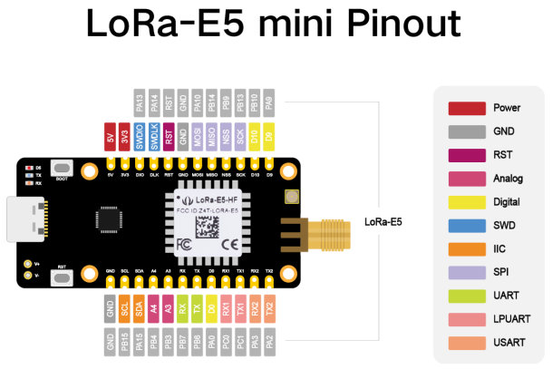

LoRa-E5 mini
Overview
LoRa-E5 mini is a compacted-sized development board suitable for the rapid testing and building of small-sized LoRa device, exposing all capabilities of Seeed Studio LoRa-E5 STM32WLE5JC module.
Hardware
The boards’ LoRa-E5 Module packages a STM32WLE5JC SOC, a 32MHz TCXO, and a 32.768kHz crystal oscillator in a 28-pin SMD package. This STM32WLEJC SOC is powered by ARM Cortex-M4 core and integrates Semtech SX126X LoRa IP to support (G)FSK, BPSK, (G)MSK, and LoRa modulations.
LoRa-E5 STM32WLE5JC Module with STM32WLE5JC multiprotocol LPWAN single-core 32-bit microcontroller (Arm® Cortex®-M4 at 48 MHz) in 28-pin SMD package featuring:
Ultra-low-power MCU
RF transceiver (150 MHz to 960 MHz frequency range) supporting LoRa®, (G)FSK, (G)MSK, and BPSK modulations
256-Kbyte Flash memory and 64-Kbyte SRAM
Hardware encryption AES256-bit and a True random number generator
1 user LED
2 serial communication (RX/TX) LEDs
1 boot/user and 1 reset push-button
32.768 kHz LSE crystal oscillator
32 MHz HSE oscillator
Board connectors:
USB Type-C connector
+/- (battery) power input pins (3-5V)
SMA-K and IPEX antenna connectors
Delivered with SMA antenna (per default IPEX connector is disconnected)
Flexible power-supply options: USB Type C or 3-5V battery soldered to +/- pins
Suitable for rapid prototyping of end nodes based on LoRaWAN, Sigfox, wM-Bus, and many other proprietary protocols
All GPIOs led out from the LoRa-E5 STM32WLE5JC module
4x M2 mounting holes
More information about the board can be found at the LoRa-E5 mini Wiki.
More information about LoRa-E5 STM32WLE5JC Module can be found here:
Supported Features
The lora_e5_mini board supports the hardware features listed below.
- on-chip / on-board
- Feature integrated in the SoC / present on the board.
- 2 / 2
-
Number of instances that are enabled / disabled.
Click on the label to see the first instance of this feature in the board/SoC DTS files. -
vnd,foo -
Compatible string for the Devicetree binding matching the feature.
Click on the link to view the binding documentation.
Connections and IOs
LoRa-E5 mini has 4 GPIO controllers. These controllers are responsible for pin muxing, input/output, pull-up, etc.
Available pins:

Default Zephyr Peripheral Mapping:
USART_1 TX : PB6
USART_1 RX : PB7
I2C_2_SCL : PB15
I2C_2_SDA : PA15
BOOT_PB : PB13
LED_1 : PB5
System Clock
LoRa-E5 mini board System Clock could be driven by the low-power internal (MSI), High-speed internal (HSI) or High-speed external (HSE) oscillator, as well as main PLL clock. By default System clock is driven by the MSI clock at 48MHz.
Programming and Debugging
The lora_e5_mini board supports the runners and associated west commands listed below.
| flash | debug |
|---|
Applications for the lora_e5_mini board configuration can be built the
usual way (see Building an Application).
In the factory the module is flashed with an DFU bootloader, an AT command
firmware, and the read protection level 1 is enabled.
So before you can program a Zephyr application to the module for the first time
you have to reset the read protection to level 0.
In case you use an st-link debugger you can use the STM32CubeProgrammer GUI to
set the RDP option byte to AA,
or use the STM32_Programmer_CLI passing the --readunprotect command
to perform this read protection regression.
The RDP level 1 to RDP level 0 regression will erase the factory programmed AT
firmware, from which seeed studio has neither released the source code nor a binary.
Also, note that on the module the BOOT0 pin of the SOC is not accessible,
so the system bootloader will only be executed if configured in the option bytes.
Flashing
The LoRa-E5 mini does not include a on-board debug probe.
But the module can be debugged by connecting an external debug probe to the
2.54mm header.
Depending on the external probe used, openocd, the stm32cubeprogrammer,
pyocd, blackmagic, or jlink runner can be used to flash the board.
Additional notes:
Pyocd: For STM32WL support Pyocd needs additional target information, which can be installed by adding “pack” support with the following pyocd command:
$ pyocd pack --update
$ pyocd pack --install stm32wl
Flashing an application to LoRa-E5 mini
Connect the LoRa-E5 to your host computer using the external debug probe. Then build and flash an application. Here is an example for the Hello World application.
Run a serial host program to connect with your board:
Per default the console on usart1 is available on the USB Type C connector
via the built-in USB to UART converter.
$ picocom --baud 115200 /dev/ttyACM0
Then build and flash the application.
# From the root of the zephyr repository
west build -b lora_e5_mini samples/hello_world
west flash
Debugging
You can debug an application in the usual way. Here is an example for the Blinky application.
# From the root of the zephyr repository
west build -b lora_e5_mini samples/basic/blinky
west debug